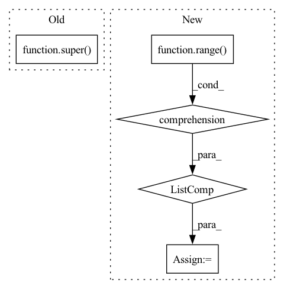

Pattern ID :4034

Before Change
hidden_size,
n_layers=1,
root_weight=True):
super(GraphConvGRU, self).__init__()
self.input_size = input_size
self.hidden_size = hidden_size
self.n_layers = n_layers
After Change
**kwargs):
self.input_size = input_size
self.hidden_size = hidden_size
rnn_cells = [
GraphConvGRUCell(input_size if i == 0 else hidden_size, hidden_size,
asymmetric_norm=asymmetric_norm,
root_weight=root_weight, activation=activation,
bias=bias, cached=cached,
**kwargs)
for i in range(n_layers)
]
super(GraphConvGRU, self).__init__(rnn_cells, cat_states_layers,
return_only_last_state)
In pattern: SUPERPATTERN
Frequency: 3
Non-data size: 5
Instances
Fragment ID: 15018781
Project Name: torchspatiotemporal/tsl
Commit Name: acade09a6f966fa0546f78fdd97f0a4ca291ec76
Time: 2022-12-13
Author: ivan.marisca@hotmail.it
File Name: tsl/nn/blocks/encoders/gcgru.py
M Class Name: GraphConvGRU
N Class Name: GraphConvGRU
M Method Name: __init__(11)
N Method Name: __init__(5)
M Parent Class: RNNBase
N Parent Class: _GraphRNN
M File Name: tsl/nn/blocks/encoders/gcgru.py
N File Name: tsl/nn/blocks/encoders/gcgru.py
M Start Line: 39
M End Line: 52
N Start Line: 62
N End Line: 82
'>
Before Change
maximum_position_encoding: int = 50,
dropout: float = 0.2,
) -> None:
super().__init__()
self.d_model = d_model
self.num_layers = num_layers
After Change
self.source_attention = nn.ModuleList(
[MultiHeadAttention(num_heads, d_model, dropout) for _ in range(self.num_layers)]
)
self.position_feed_forward = nn.ModuleList(
[PositionwiseFeedForward(d_model, dff, dropout) for _ in range(self.num_layers)]
)
def forward(
self,
'>
Fragment ID: 15018780
Project Name: mindee/doctr
Commit Name: fddceba7bee5098b4219b7ba6a0bdf4f4a98adfe
Time: 2022-06-09
Author: felixdittrich92@gmail.com
File Name: doctr/models/recognition/transformer/pytorch.py
M Class Name: Decoder
N Class Name: Decoder
M Method Name: __init__(8)
N Method Name: __init__(8)
M Parent Class: nn.Module
N Parent Class: nn.Module
M File Name: doctr/models/recognition/transformer/pytorch.py
N File Name: doctr/models/recognition/transformer/pytorch.py
M Start Line: 42
M End Line: 67
N Start Line: 116
N End Line: 141
'>
Before Change
hidden_size,
n_layers=1,
root_weight=True):
super(GraphConvLSTM, self).__init__()
self.input_size = input_size
self.hidden_size = hidden_size
self.n_layers = n_layers
After Change
**kwargs):
self.input_size = input_size
self.hidden_size = hidden_size
rnn_cells = [
GraphConvLSTMCell(input_size if i == 0 else hidden_size,
hidden_size, asymmetric_norm=asymmetric_norm,
root_weight=root_weight, activation=activation,
bias=bias, cached=cached,
**kwargs)
for i in range(n_layers)
]
super(GraphConvLSTM, self).__init__(rnn_cells, cat_states_layers,
return_only_last_state)
'>
Fragment ID: 15018783
Project Name: torchspatiotemporal/tsl
Commit Name: acade09a6f966fa0546f78fdd97f0a4ca291ec76
Time: 2022-12-13
Author: ivan.marisca@hotmail.it
File Name: tsl/nn/blocks/encoders/gclstm.py
M Class Name: GraphConvLSTM
N Class Name: GraphConvLSTM
M Method Name: __init__(11)
N Method Name: __init__(5)
M Parent Class: RNNBase
N Parent Class: _GraphRNN
M File Name: tsl/nn/blocks/encoders/gclstm.py
N File Name: tsl/nn/blocks/encoders/gclstm.py
M Start Line: 41
M End Line: 54
N Start Line: 69
N End Line: 89